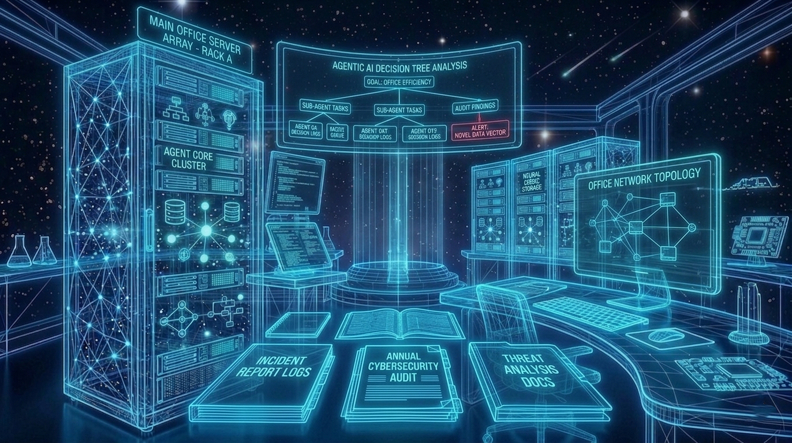

Filter by:
Date Completed:
Introduction To Incident Response
A practical cyber simulation focused on creating industry standard dashboards to monitor activity and producing high qualtity incident reports.
Introduction To AI Agents
An introductory course that focused on key concepts in theory and code surrounding agentic AI and frameworks. Such as LLM's, RAGs and multi agent frameworks.
Introduction To Cybersecurity
A course focused on highlighting the different domains of cybersecurity and how each role operates and interconnects in the world of cybersecurity.
 Cybersecurity Girl
Cybersecurity Girl

Security Consulting
A course focused on industry standard auditing and consulting in relation to guidelines such as NIST & SOX with incident reports and an interview style approach.

Communicate your Ideas through Storytelling
A course focused on clear and consise communication in a way that engages and captivates an audience while conveying the main points.

Cybersecurity Job Simulation
A practical cyber simulation focusing on the dangers of phishing and teaching cyber awareness and education skills.
Cybersecurity Operations
A cybersecurity simulation designed to showcase the work done by Security Consulting Firms, such as IT auditing & Incident Reports.

Self-Paced Learning
Between structured courses/certificates and projects, I often deep-dive into engaging concepts, emerging technologies, and hot topics within Cybersecurity and Computer Science. Through self-paced learning, watching videos, taking notes, completing labs, and creating custom infographics & quizzes to actively cement and showcase my knowledge. I don't do this for a certificate; I do it to stay ahead in an ever-changing industry.
Explore the complete raw repository of notes, deep-dives, and technical milestones.